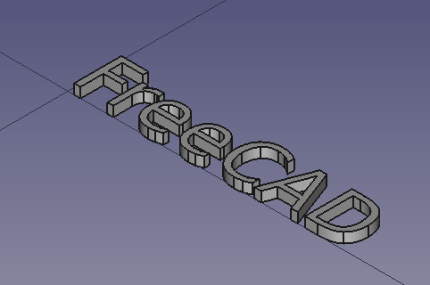

Frontpaneel met tekst: graveren & embossenFaçade avec texte : graver & embossFront panel text: engrave & emboss
Een frontpaneel zonder opschriften is half werk. Met ShapeString zet je tekst om in echte geometrie die je kunt verhogen (embossen) of verzinken (graveren) — voor labels als "VOL", "PTT", een schaalverdeling of je roepnaam.Une façade sans inscriptions est inachevée. ShapeString transforme du texte en géométrie à emboss ou graver.A front panel without labels is half done. ShapeString turns text into real geometry you can emboss or engrave — labels like "VOL", "PTT", a scale, or your callsign.
- tekst als geometrie maken met ShapeStringcréer du texte-géométrie avec ShapeStringcreate text geometry with ShapeString
- tekst verhogen (embossen) of verzinken (graveren)emboss ou graver le texteemboss or engrave the text
- tekst leesbaar én printbaar op een paneel plaatsenplacer un texte lisible et imprimableplace legible, printable text on a panel
Tekst maak je in de Draft-workbench; verhogen/verzinken doe je in Part Design.Texte dans l'atelier Draft ; relief/creux dans Part Design.Make text in the Draft workbench; raise/recess in Part Design.
- Schakel naar Draft → Hulpmiddelen → Vorm uit tekst (ShapeString). Typ je tekst, kies een lettertype en hoogte (later wijzigbaar).Atelier Draft → Forme depuis texte. Texte + police + hauteur.Switch to Draft → Tools → Shape from text (ShapeString). Type the text, pick a font and height.
- Positioneer de tekst op het frontpaneel-vlak (via attachment of constraints).Positionnez sur la face (attachment).Position the text on the panel face (via attachment or constraints).
- Schakel naar Part Design, selecteer de tekst en kies Vlak (Pad) voor verhoogd of Uitsparing (Pocket) voor verzonken. Geef de hoogte/diepte.Part Design : Pad (relief) ou Cavité (creux) + hauteur/profondeur.In Part Design, select the text and use Pad (raised) or Pocket (recessed). Set the height/depth.
01Tekst als geometrie (ShapeString)Texte-géométrie (ShapeString)Text as geometry (ShapeString)
ShapeString ("vorm uit tekst") zet letters om in echte contouren — net als lijnen in een schets. Daardoor kun je die contouren gebruiken als profiel voor een Pad of een Pocket, precies zoals elke andere vorm. Lettertype en hoogte zijn parameters die je achteraf nog kunt aanpassen.ShapeString convertit les lettres en contours réels, utilisables comme profil pour Pad/Cavité. Police et hauteur restent paramétrables.ShapeString turns letters into real outlines — like sketch lines — so you can use them as a profile for a Pad or Pocket. Font and height stay editable parameters.
02Embossen (verhoogd) of graveren (verzonken)Emboss ou graverEmboss or engrave
Twee keuzes, één principe. Embossen = de tekst verhogen met een Pad (letters steken uit het paneel). Graveren = de tekst verzinken met een Pocket (letters liggen in het paneel). Voor 3D-print is verzonken vaak het netst, en met een tweede kleur filament op de eerste lagen krijg je leesbare, contrasterende tekst.Emboss = relief (Pad) ; graver = creux (Cavité). En impression, le creux est souvent plus net ; un changement de filament donne du contraste.Emboss = raise it with a Pad; engrave = recess it with a Pocket. For printing, recessed is often cleanest; a filament colour change gives readable, contrasting text.

03Op het frontpaneel plaatsenPlacer sur la façadePlacing it on the panel
Plaats de tekst op het platte frontpaneel-vlak (op een gebogen vlak lukt het niet — zie H09/H14). Lijn labels uit met je knoppen en gaten, en hou de tekst groot genoeg: te dunne of te kleine letters komen er bij het printen niet leesbaar uit. Een verzonken diepte (of verhoogde hoogte) van ongeveer een halve millimeter is een goede startwaarde — richtwaarde, testen op de clubprinter.Sur une face plane (pas courbe — H14). Alignez avec boutons/trous ; gardez le texte assez grand. ≈0,5 mm de profondeur — valeur indicative, à tester.Place on the flat panel face (not curved — H14). Align with knobs/holes and keep text large enough. About half a millimetre depth/height is a good start — guide value, test on the club printer.
ShapeString = tekst als geometrie. Eens het tekst-geometrie is, behandel je het als elk ander profiel: Pad om te verhogen (embossen) of Pocket om te verzinken (graveren).ShapeString = texte-géométrie, traité comme un profil : Pad (relief) ou Cavité (creux).ShapeString = text as geometry. Then treat it like any profile: Pad to emboss or Pocket to engrave.
Lettertype en hoogte blijven achteraf wijzigbaar, dus experimenteer gerust. Kies een stevig, schreefloos lettertype en vermijd heel dunne letters: die vallen bij kleine afmetingen weg. Test een klein labelstrookje vóór je het hele paneel print.Police et hauteur restent éditables. Préférez une police sans empattement et épaisse ; testez un petit échantillon.Font and height stay editable. Pick a solid sans-serif font and avoid very thin letters; test a small label strip first.
Graveer de functielabels naast elke knop ("VOL", "SQL", "PTT"), een kleine schaalverdeling rond een draaiknop, of je roepnaam ON3VZ in de hoek van het paneel. Eén keer goed gemaakt, en elk volgend toestel oogt meteen professioneel.Gravez "VOL", "SQL", "PTT", une échelle, ou votre indicatif sur la façade.Engrave function labels ("VOL", "SQL", "PTT"), a small dial scale, or your callsign in the panel corner.
Maak met ShapeString het label "ON3VZ" en plaats het op je frontpaneel. Graveer het ongeveer 0,5 mm diep met een Pocket. Print een klein testlabel en controleer of het leesbaar is; pas anders de hoogte of het lettertype aan.Créez "ON3VZ" en ShapeString, gravez ~0,5 mm (Cavité), testez la lisibilité.Make the label "ON3VZ" with ShapeString, engrave it ~0.5 mm deep (Pocket), and test-print for legibility.
04Veelgemaakte foutenErreurs fréquentesCommon mistakes
- Te kleine of te dunne letters. Onleesbaar na het printen. Maak ze groter of kies een steviger lettertype.Lettres trop petites/fines. Agrandissez.Letters too small/thin. Unreadable when printed. Enlarge or pick a bolder font.
- Op een gebogen vlak willen schetsen. Tekst hoort op een plat vlak; maak anders eerst een referentievlak (H14).Face courbe. Utilisez une face plane (H14).Trying a curved face. Text needs a flat face; else make a datum plane (H14).
- Vergeten van workbench te wisselen. ShapeString zit in Draft; Pad/Pocket in Part Design.Oubli d'atelier. ShapeString = Draft ; Pad/Cavité = Part Design.Forgot to switch workbench. ShapeString is in Draft; Pad/Pocket in Part Design.
ShapeString is voor tekst; voor een echt logo (bv. het clublogo ON6WL) gebruik je Inkscape, een gratis SVG-tekenprogramma. Teken of bewerk je logo daar, bewaar als SVG, en importeer dat in FreeCAD. Je krijgt dan geometrie die je net als een schets kunt padden (verhoogd) of pocketten (verzonken) op je paneel. Hou ook hier de lijnen niet te fijn, zodat het printbaar blijft.Pour un vrai logo : dessinez-le dans Inkscape, exportez en SVG, importez dans FreeCAD, puis pad/pocket. Évitez les traits trop fins.ShapeString is for text; for a real logo (e.g. the club logo) use Inkscape, a free SVG editor. Draw it, save as SVG, import into FreeCAD, then pad or pocket it. Keep lines not too thin so it stays printable.
05Samenvatting
ShapeString (Draft) maakt van tekst echte geometrie. Die verhoog je met een Pad (embossen) of verzink je met een Pocket (graveren) in Part Design. Plaats de tekst op een plat vlak, hou de letters groot en stevig genoeg, en test de leesbaarheid met een kleine print. Zo krijgt je frontpaneel nette labels, een schaalverdeling of je roepnaam.ShapeString (Draft) → géométrie ; Pad (relief) ou Cavité (creux). Face plane, lettres assez grandes, testez.ShapeString (Draft) makes text into geometry; Pad to emboss or Pocket to engrave (Part Design). Flat face, large enough letters, test legibility.
- ShapeString (Draft) = tekst → geometrie.ShapeString (Draft) = texte → géométrie.ShapeString (Draft) = text → geometry.
- Pad = verhoogd (embossen); Pocket = verzonken (graveren).Pad = relief ; Cavité = creux.Pad = emboss; Pocket = engrave.
- Plat vlak, stevige letters, leesbaarheid testprinten.Face plane, lettres épaisses, testez.Flat face, bold letters, test-print legibility.